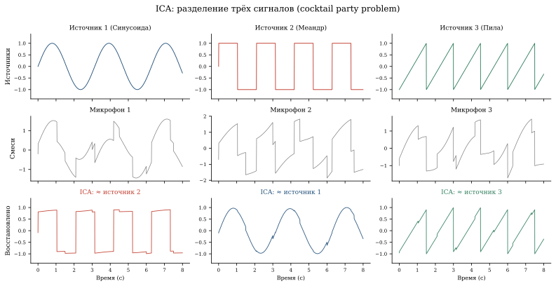
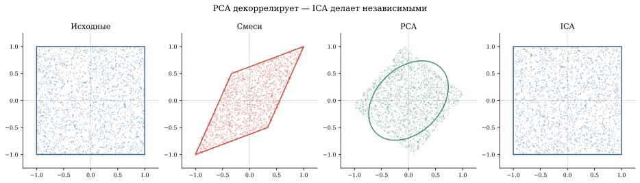

ICA и задача коктейльной вечеринки
Представьте комнату с тремя людьми и тремя микрофонами. Каждый микрофон записывает смесь всех трёх голосов. Задача — восстановить отдельные голоса, не зная ни расположения микрофонов, ни характеристик голосов. Это задача коктейльной вечеринки (cocktail party problem), и её решает метод независимых компонент (ICA). Причём не нужно знать ни матрицу смешивания A, ни форму сигналов — достаточно того, что они не гауссовы.

Постановка задачи
Пусть s(t) = (s_1(t), \ldots, s_n(t))^T — вектор из n исходных сигналов (голоса, музыка, шум). Микрофоны записывают линейные смеси:
x(t) = A \cdot s(t),
где A \in \mathbb{R}^{n \times n} — неизвестная матрица смешивания. Мы наблюдаем только x(t). Нужно найти матрицу W \approx A^{-1}, чтобы восстановить:
\hat{s}(t) = W \cdot x(t).
PCA ищет ортогональные направления максимальной дисперсии и делает компоненты некоррелированными (\text{Cov}(y_i, y_j) = 0). Но некоррелированность ≠ независимость.
ICA ищет направления, делающие компоненты статистически независимыми (P(y_i, y_j) = P(y_i) P(y_j)). Это гораздо более сильное условие, и именно оно нужно для разделения сигналов.
Почему PCA не справляется
Рассмотрим два независимых равномерных сигнала s_1, s_2 \sim U[-1, 1]. Их совместное распределение — квадрат. После линейного смешивания x = As квадрат превращается в параллелограмм.
PCA находит оси максимальной дисперсии — это главные оси эллипса разброса, вписанного в параллелограмм. Но стороны параллелограмма (= направления исходных сигналов) в общем случае не совпадают с осями эллипса.
ICA ищет именно стороны параллелограмма — направления, при проецировании на которые распределения максимально негауссовы.

Ключевая идея: негауссовость
Центральная предельная теорема говорит: сумма независимых случайных величин стремится к гауссову распределению. Поэтому смесь сигналов обычно ближе к гауссову распределению, чем каждый сигнал по отдельности.
Если мы найдём линейные комбинации w^T x, которые максимально далеки от гауссовости, — это и будут исходные компоненты. Такой поиск эквивалентен минимизации взаимной информации между компонентами (см. раздел «Связь с информационной теорией» ниже).
ЦПТ — ваш ориентир. Смесь ближе к гауссову распределению, чем каждый источник по отдельности. Ищите самые негауссовые проекции — там спрятаны источники.
Меры негауссовости:
Куртозис (эксцесс): для центрированной величины (\mathbb{E}[y] = 0): \kappa_4 = \mathbb{E}[y^4] - 3(\mathbb{E}[y^2])^2. Для гауссова \kappa_4 = 0. Для равномерного \kappa_4 < 0 (плосковершинное). Для лапласова \kappa_4 > 0 (острый пик).
Негэнтропия: J(y) = H(y_{\text{gauss}}) - H(y) \geq 0, где y_{\text{gauss}} — гауссова случайная величина с такой же дисперсией. Негэнтропия = 0 только для гауссовой.
Почему гауссов сигнал — слепое пятно ICA
Если один из исходных сигналов s_i — гауссов, ICA не может его отделить. Причина в самом распределении: гауссово распределение не меняется при ортогональных поворотах, поэтому по данным не понять, какой поворот верный.
- Не более одного гауссова сигнала среди компонент
- Число наблюдений (микрофонов) ≥ числа источников
- Данные порождены независимыми источниками (предположение модели; нарушение ведёт к смысловым артефактам, не к ошибке алгоритма)
- Матрица смешивания A обратима
- ICA не определяет порядок компонент и их знак — это нормально (восстановленный сигнал 1 может соответствовать источнику 3)
Алгоритм FastICA
Hyvärinen1 предложил эффективный итеративный алгоритм:
1 Hyvärinen, Oja. Independent Component Analysis: Algorithms and Applications, Neural Networks, 2000.
Шаг 0. Вычесть среднее и уравнять разброс по всем направлениям (это делает PCA): z = \Lambda^{-1/2} U^T (x - \bar{x}), где U\Lambda U^T — собственное разложение ковариационной матрицы. После этого ковариационная матрица становится единичной: \text{Cov}(z) = I. Данные одинаково «раздуты» во все стороны, и дальше ICA ищет уже не масштаб, а форму распределения.
Шаг 1. Инициализация случайного вектора w единичной нормы.
Шаг 2. Итерация с фиксированной точкой:
w \leftarrow \mathbb{E}[z \cdot g(w^T z)] - \mathbb{E}[g'(w^T z)] \cdot w,
где g(u) = \tanh(u) — нелинейность, через которую приближают негэнтропию.
Шаг 3. Нормализация: w \leftarrow w / \|w\|.
Шаг 4. Повторять шаги 2—3 до сходимости.
Для нескольких компонент добавляется ортогонализация Грама–Шмидта между найденными направлениями.
import numpy as np
def fastica(X, n_components, max_iter=200, tol=1e-6):
"""Минимальная реализация FastICA."""
n, m = X.shape # n — число каналов, m — число отсчётов
# Центрирование
X = X - X.mean(axis=1, keepdims=True)
# Уравниваем разброс по всем направлениям
cov = np.cov(X)
eigvals, eigvecs = np.linalg.eigh(cov)
D = np.diag(1.0 / np.sqrt(eigvals + 1e-10))
Z = D @ eigvecs.T @ X # разброс по всем осям стал одинаковым
W = np.zeros((n_components, n))
for p in range(n_components):
w = np.random.randn(n)
w /= np.linalg.norm(w)
for _ in range(max_iter):
# g(u) = tanh(u), g'(u) = 1 - tanh(u)^2
proj = w @ Z
g = np.tanh(proj)
gp = 1 - g**2
w_new = (Z * g).mean(axis=1) - gp.mean() * w
# Ортогонализация к уже найденным
for j in range(p):
w_new -= (w_new @ W[j]) * W[j]
w_new /= np.linalg.norm(w_new)
if abs(abs(w_new @ w) - 1) < tol:
break
w = w_new
W[p] = w
S = W @ Z # восстановленные компоненты
return S, WДемо: разделение звуков
Возьмитесь за стрелки и смешайте источники сами: тяните столбцы матрицы A. Квадрат перекашивается в параллелограмм, а оси PCA и ICA расходятся так, как описано выше.
import numpy as np
from sklearn.decomposition import FastICA
import matplotlib.pyplot as plt
np.random.seed(0)
n_samples = 2000
t = np.linspace(0, 8, n_samples)
# Три независимых источника
s1 = np.sin(2 * t) # синусоида
s2 = np.sign(np.sin(3 * t)) # прямоугольная волна
s3 = (t % 1.5) / 1.5 - 0.5 # пилообразная волна
S = np.c_[s1, s2, s3].T # (3, n_samples)
# Матрица смешивания
A = np.array([[1.0, 0.5, 0.2],
[0.3, 1.0, 0.7],
[0.6, 0.4, 1.0]])
X = A @ S # наблюдаемые смеси
# Восстановление через FastICA
ica = FastICA(n_components=3, random_state=42)
S_hat = ica.fit_transform(X.T).T
fig, axes = plt.subplots(3, 3, figsize=(14, 8), sharex=True)
titles = [["Источник 1", "Источник 2", "Источник 3"],
["Смесь 1", "Смесь 2", "Смесь 3"],
["Восстановленный 1", "Восстановленный 2", "Восстановленный 3"]]
data = [S, X, S_hat]
for row in range(3):
for col in range(3):
axes[row, col].plot(t, data[row][col], lw=0.8)
axes[row, col].set_title(titles[row][col])
plt.tight_layout()Применения ICA
| Область | Задача | Что разделяем |
|---|---|---|
| Нейронауки | Очистка ЭЭГ | Мозговая активность от моргания глаз |
| fMRI | Пространственный ICA (spatial ICA) | Независимые нейронные сети мозга |
| Финансы | Выделение факторов | Независимые движущие силы рынка |
| Телеком | MIMO | Сигналы от разных антенн |
| Астрономия | Выделение реликтового излучения (CMB) из смеси | Реликтовое излучение и галактическая пыль |
Пример: очистка ЭЭГ
Электроэнцефалограмма — сигнал с 64 электродов на голове. Помимо мозговой активности, электроды ловят моргание (EOG), сердцебиение (ECG), мышечные артефакты (EMG). ICA разделяет эти компоненты, нейробиолог вручную отмечает артефактные (по характерной пространственной карте и спектру), и данные собирают обратно уже без них.
Связь с информационной теорией
Максимизация негауссовости эквивалентна минимизации взаимной информации между компонентами:
I(y_1, \ldots, y_n) = \sum_i H(y_i) - H(y_1, \ldots, y_n).
Если компоненты действительно независимы, I = 0. ICA ищет такое линейное преобразование, которое минимизирует I — то есть делает компоненты максимально «не знающими» друг о друге.
Через эту формулу ICA связан с энтропией Шеннона из Части I книги и с перекрёстной энтропией (cross-entropy), которую минимизируют при обучении нейросетей.
Связи
- PCA и eigenfaces — с него начинается ICA: сначала уравнять разброс по осям, потом искать независимость
- SVD — PCA это SVD центрированных данных
- Тяжёлые хвосты — негауссовость, которую ICA как раз и ищет
- Байесовский подход — вариационный ICA через EM-алгоритм